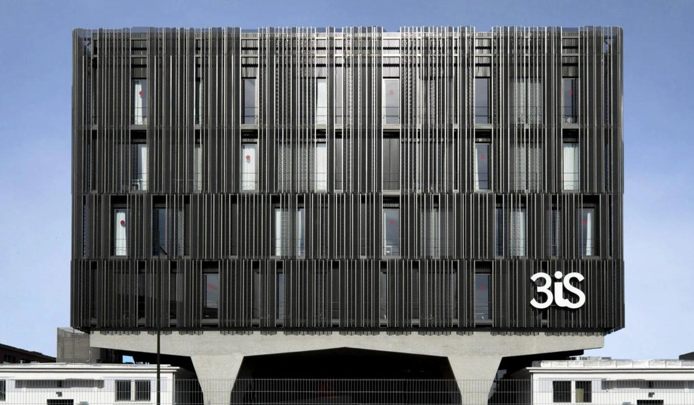

En bref
Une école de cinéma privée coûte de 7 680 à 9 900 € par an sur les tarifs que nous avons relevés. Chez 3iS, le Bachelor Cinéma et Audiovisuel coûte 8 700 € en 1re année, 9 600 € en 2e et 9 900 € en 3e, plus 490 € de frais d’inscription. Les écoles publiques comme La Fémis et l’ENS Louis-Lumière ne demandent que des frais réduits, mais recrutent sur concours.
- 3iS publie ses tarifs, de 8 700 € à 9 900 € par an pour le bachelor
- Cinécréatis affiche 7 680 € en 2e et 3e années
- L’alternance en 3e année réduit le coût du cursus chez 3iS
- Le concours de l’ENS Louis-Lumière coûte 120 €, 60 € pour les boursiers
Sommaire de ce guide
Les tarifs des écoles privées
Les écoles privées fixent librement leurs frais. Les tarifs augmentent souvent d’une année à l’autre, avec le matériel et le volume de tournage. Chez 3iS, la grille est publiée en ligne pour chaque programme, du bachelor au mastère.
| Programme 3iS | Coût annuel |
|---|---|
| Bachelor Cinéma et Audiovisuel | 8 700 € à 9 900 € |
| Bachelor Ingénieur du son | 8 700 € à 9 900 € |
| DESTIS | 8 700 € à 9 900 € |
| Mastère Réalisation | 9 500 € puis 9 900 € |
| Mastère Production | 9 900 €, en alternance |
Grille publiée sur 3is-education.fr, page droits d’admission et de scolarité. Frais d’inscription de 490 €.

Les écoles publiques
La Fémis et l’ENS Louis-Lumière sont les deux grandes écoles publiques de cinéma. Leurs frais d’études sont très inférieurs à ceux du privé, mais l’entrée se fait sur concours, avec très peu de places. Le concours de l’ENS Louis-Lumière coûtait 120 € en 2025, 60 € pour les boursiers.
Le BTS métiers de l’audiovisuel en lycée public est une autre voie gratuite, en 2 ans.
Ce qu’il faut ajouter au budget
- Les frais d’inscription, 490 € par an chez 3iS
- Le logement, plus cher à Paris qu’à Nantes, Bordeaux, Lyon ou Avignon
- Un ordinateur capable de faire tourner les logiciels de montage
- Une caution matériel dans certaines écoles, 500 € par chèque non encaissé chez 3iS
Comment payer moins cher
L’alternance est le levier le plus efficace. Chez 3iS, le bachelor cinéma ouvre l’alternance en 3e année et le Mastère Production se fait entièrement en alternance, l’entreprise prenant en charge la formation. Le choix du campus compte aussi, la vie étudiante coûtant moins cher en région.
Le bon calcul, c’est le coût total du cursus, logement compris, moins ce que l’alternance prend en charge.
Notre conseil
Comparez le coût total sur trois ans plutôt que la première année. Une école qui publie toute sa grille, comme 3iS, permet de faire ce calcul avant de candidater.
Si le budget est serré, tentez les concours publics et regardez de près les années ouvertes à l’alternance.
Questions fréquentes
Combien coûte une école de cinéma ?
Une école privée coûte de 7 680 à 9 900 € par an sur les tarifs que nous avons relevés. Chez 3iS, le Bachelor Cinéma et Audiovisuel coûte 8 700 €, 9 600 € puis 9 900 €, plus 490 € de frais d’inscription.
Existe-t-il des écoles de cinéma gratuites ?
Les écoles publiques, La Fémis et l’ENS Louis-Lumière, ont des frais réduits mais recrutent sur concours. Le BTS métiers de l’audiovisuel est gratuit en lycée public.
Peut-on faire une école de cinéma en alternance ?
Oui. Chez 3iS, l’alternance est possible en 3e année de bachelor et le Mastère Production se fait en alternance.
Quels frais s’ajoutent aux frais de scolarité ?
Les frais d’inscription (490 € chez 3iS), le logement, le matériel informatique et parfois une caution matériel.
Combien coûte un mastère de cinéma ?
Chez 3iS, le Mastère Réalisation coûte 9 500 € puis 9 900 €, et le Mastère Production 9 900 €, en alternance.
Notre méthode
Ce comparatif repose sur des données publiques, vérifiables une par une.
- Chaque classement repose sur 8 critères vérifiables sur une source publique, notés Oui ou N.A, 1 point par Oui, poids égal
- Les frais de scolarité sont relevés sur les pages tarifs officielles des écoles, à la date indiquée
- Les diplômes sont vérifiés au Répertoire national des certifications professionnelles (France Compétences)
- Les taux d’insertion sont ceux que les écoles publient elles-mêmes sur leur site
- N.A signifie non applicable, car données non trouvées par la rédaction. Deux écoles à égalité de points sont classées ex æquo